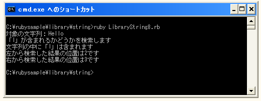

- Home ›
- Ruby入門 ›
- 文字列(String)クラス
文字列を検索する
文字列の中に指定の文字列が含まれるかどうかを検索する方法を確認します。Stringクラスで用意されている「index」メソッドを使います。
index(pattern[, pos])
文字列の検索を左端から右端に向かって行います。見つかった場合は文字列の左端の位置を返します。見つからなければ「nil」を返します。
1番目の引数に検索する文字列又は文字コードを指定します。2番目の引数を指定した場合には検索を開始する位置を指定します。バイト単位で先頭が0となります。2番目の引数を省略した場合は先頭から検索します。
具体的には次のように記述します。
str = "Hello"
pos = str.index("ll")
上記の場合には変数「pos」には「2」が格納されます。
右端から検索する
文字列の右端から検索するにはStringクラスで用意されている「rindex」メソッドを使います。
rindex(pattern[, pos])
文字列の検索を右端から左端に向かって行います。見つかった場合は文字列の左端の位置を返します。見つからなければ「nil」を返します。
1番目の引数に検索する文字列又は文字コードを指定します。2番目の引数を指定した場合には検索を開始する位置を指定します。バイト単位で先頭が0となります。2番目の引数を省略した場合は文字の最後から検索します。
具体的には次のように記述します。
str = "Hello"
pos = str.rindex("l")
上記の場合には変数「pos」には「3」が格納されます。
文字列が含まれているかどうかだけを確認する
検索する文字列が含まれているかどうかだけを確認するメソッドも用意されています。Stringクラスで用意されている「include」メソッドを使います。
include?(substr)
文字列の中に指定した文字列が含まれていれば「true」を返します。
1番目の引数に検索する文字列又は文字コードを指定します。
具体的には次のように記述します。
str = "Hello"
check = str.include?("el")
上記の場合には変数「check」には「true」が格納されます。
サンプルプログラム
では簡単なサンプルで試してみます。
#! ruby -Ks
str = "Hello"
print("対象の文字列：", str, "¥n")
print("「l」が含まれるかどうかを検索します¥n")
check = str.include?("l")
if check
print("文字列の中に「l」は含まれます¥n")
lpos = str.index("l")
rpos = str.rindex("l")
print("左から検索した結果の位置は", lpos, "です¥n")
print("右から検索した結果の位置は", rpos, "です¥n")
else
print("文字列の中に「l」は含まれません¥n")
end
実行結果は次のようになります。

( Written by Tatsuo Ikura )

著者 / TATSUO IKURA
初心者～中級者の方を対象としたプログラミング方法や開発環境の構築の解説を行うサイトの運営を行っています。